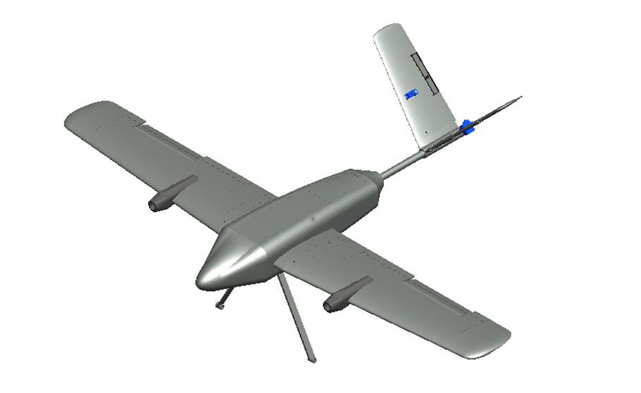
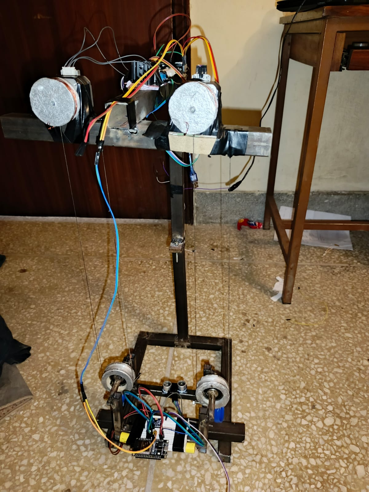
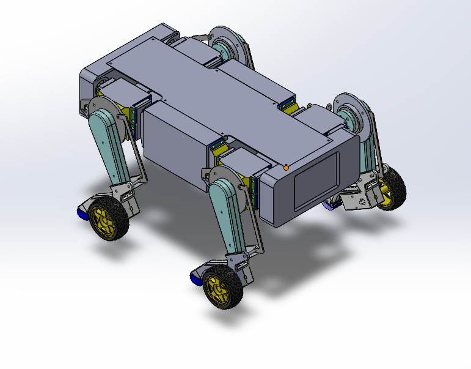
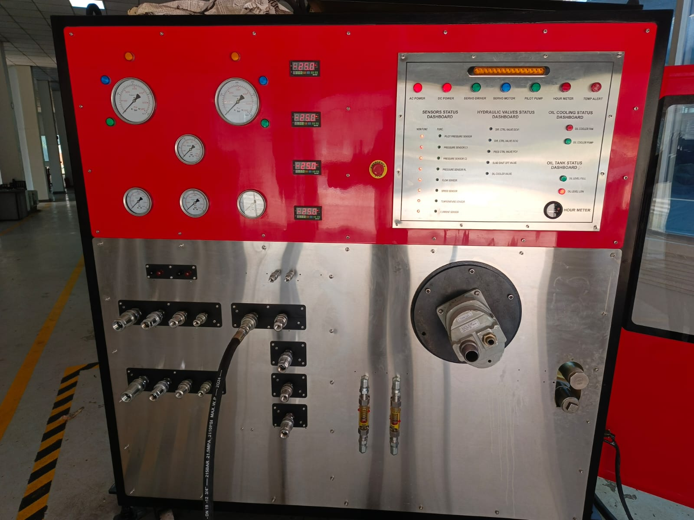
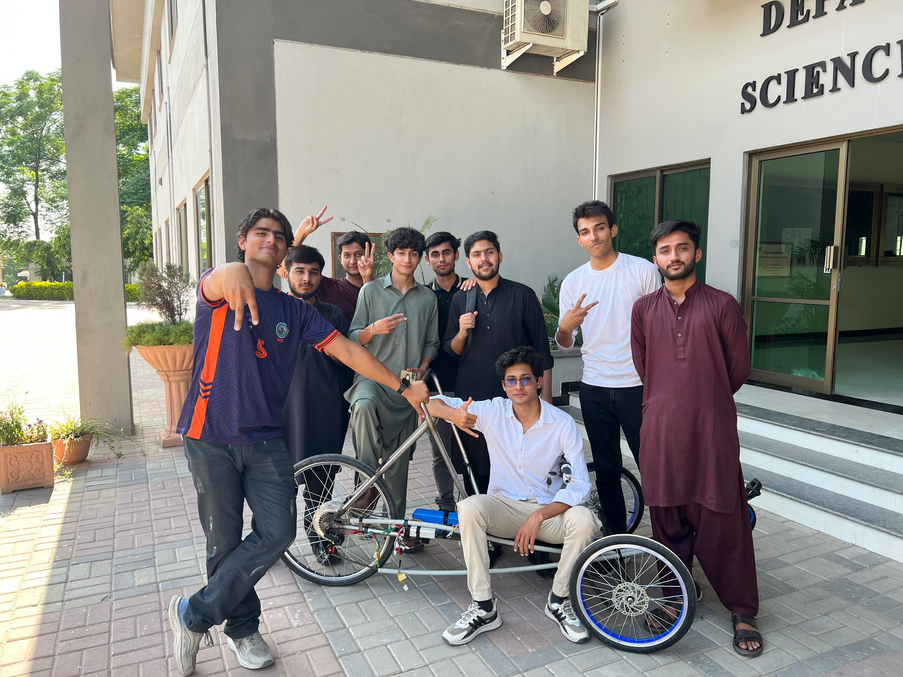

I'm Mudassar
Mechanical Engineer | Robotics & Prototyping
I design, manufacture, and prototype custom mechanical systems, blending CAD modeling with embedded electronics to build intelligent physical agents. From aerial robotics to legged movement, I craft working solutions from concepts.
About Me
I hold a Bachelor's in Mechanical Engineering from NUST College of Electrical and Mechanical Engineering (2022 - 2026). Over the course of my academic and research projects, I have specialized in bridging the gap between mechanical engineering principles and advanced electronic integration.
My work revolves around structural engineering, manufacturing workflows, and robotics. I have worked as a Project Contributor at NUST's Research and Development Center (RDC) and as an Intern in the Robot Design & Development Lab at the National Centre of Robotics and Automation (NCRA).
Whether simulating stresses in ANSYS, drafting production-ready drawings in SolidWorks, or doing hands-on assembly, I enjoy optimizing physical mechanisms for load-bearing efficiency, reliability, and autonomous operation.
Technical Toolkit
Featured Work

FYP / UAVTricopter Tilt-Rotor VTOL UAV
Designed and manufactured a tricopter tilt-rotor VTOL drone equipped with an onboard AI vision system for flood survivor detection and defense applications.

Robotics / MechatronicsSkyscraper Cleaning Robot
Led design and prototyping of a high-rise window cleaning robot utilizing a smart wire-grip motion platform, tilt-correction algorithms, and obstacle avoidance.

NCRA / Legged RoboticsQuadrupedal Robodog Development
Contributed to mechanical stability and gait optimization of a legged quadruped. Designed and simulated linkages in SolidWorks and validated structures via ANSYS.

CAD / R&DHydraulic Workbench & CAD Drawings
Engineered high-precision 2D/3D fabrication drawings for a custom hydraulic workbench and structural chassis components of an experimental electric bike.

Manufacturing / EHPVCElectric Human-Powered Vehicle (EHPVC)
Led a 10-member multidisciplinary engineering team to design, perform stress analysis on, and build Pakistan's first electric-assisted recumbent hybrid vehicle.
Get in Touch
I am open to discuss prototyping collaborations, design roles, and hardware startup opportunities. Feel free to reach out via email or message.